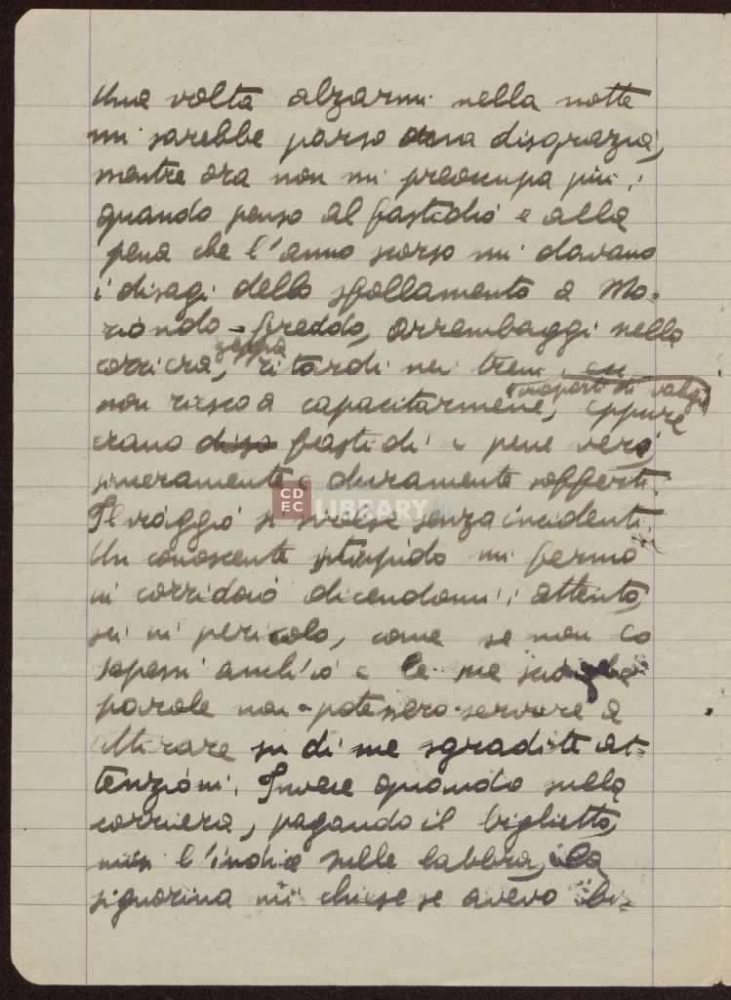

Versione elettronica degli scritti autografi di Emanuele Artom
Responsabilità:
Codificatori: Riccardo Chiari Adele Stilo
Coordinatore: Angelo Mario Del Grosso
Pubblicazione:
Luogo: Università di Pisa
Anno: 2023
Opera ad accesso libero
La fonte:
Luogo: Italia, Milano, Centro di Documentazione Ebraica Contemporanea
Autore: Emanuele Artom
Titolo: I diari di Emanuele Artom
Descrizione del supporto: il diario consiste di 172 pagine di scritti autografi di Emanuele Artom introdotte da 2
pagine, di cui una è la lettera originale della madre Amalia
Storia editoriale:
Questo diario è stato scritto tra novembre 1943 e il 23 febbraio 1944,
durante l'esperienza partigiana di Emanuele Artom.
Il file e la fonte
Scopo: Il presente progetto è stato svolto per l'esame di Codifica di Testi.
Sono stati mantenuti i segni di punteggiatura originali, qualora fossero abbastanza
chiari da essere distinti.
Gli errori riscontrati sono stati marcati con l'elemento sic e la corrispondente forma
corretta è stata inserita di seguito all'interno dell'elemento corr.
La segmentazione sillabica nei ritorni a capo è stata mantenuta.
Il testo è stato segmentato in periodi, attraverso l'elemento ab
Il valore dell'attributo when all'interno dell'elemento date è stato disposto nell'ordine
AAAA-MM-GG.
I nomi di persona sono stati marcati con l'elemento persName
I nomi di luogo sono stati marcati con l'elemento placeName
Le date sono state marcate con l'elemento date
L'autore tende spesso a scrivere il puntino delle i più a destra della i stessa. Considerando
questo aspetto ricorrente, i segni sono stati normalizzati.
I riferimenti sono stati costruiti attraverso un collegamento tra gli attributi xml:id
e ref.
Aspetti non-bibliografici
Persone presenti nel testo:
Emanuele Artom
Nato il:
23 giugno 1915
Deceduto il:
7 aprile 1944
Varietà linguistiche presenti nel testo:
Italiano
Latino
Piemontese
Legenda
parola
parola o espressione cancellate dall'autore
parola
parola o espressione che risultano poco chiare sulla fonte primaria
parola
lettera, parola o espressione scarabocchiate
parola
lettera, parola o espressione coperte da una macchia d'inchiostro
parola
parola o espressione appartenenti a una lingua diversa rispetto a quella del testo
parola
parola o espressione arcaiche
(parola)
parola errata rispetto all'italiano standard
_
indica il punto in cui la parola presente nella fonte è stata divisa nell'andare a
capo
(...)
indica la mancanza della trascrizione di una parola
Pagina 70
16
Grandine grossa, acqua tinta e neve
per l'aer tenebroso si riversa;
forse la citazione ha un sapore un
(po) po'
letterario, ma in questa vita
di strapazzi qualche po' di lette
_
ratura ha ilun fascino di un ri
_
posante.
Almeno mi pareva di
essere come Ciacco
(stassera)
stasera,
pochi minuti fa, quando torna
_
vo in albergo dopo aver cam
_
minato per ore al buio, perden
_
domi e disperdendomi per la
campagna, sotto una pioggia
continua, affondando nel
fango e nella fanghiglia, col
berretto che perdeva il colore
e stillava gocciole turchine lungo
le
(guancie)
guance
fino al collo.
Sono
tre giorni che non scrivo.
Tre
giorni fa mi alzai alle 3 e
3 quarti e partii per casa.
Pagina 71

Una volta alzarmi nella notte
mi sarebbe parso una disgrazia,
mentre ora non mi preoccupa più:
quando penso al fastidio e alla
pena che l'anno scorso mi davano
i disagi dello sfollamento a Mo
_
riondo - freddo, arrembaggi nella
corriera zeppa, ritardi nei treni trasporti di valigie e
non riesco a capacitarmene, eppure
erano disa fastidi e pene
verei,
sinceramente e duramente sofferti.
Il viaggio si svolse senza incidenti.
Un conoscente stupido mi fermò
in corridoio dicendomi: attento,
sei in pericolo, come se non lo
sapessi anch'io e le sue sciocche
parole non • potessero • servire a
attirare su di me sgradite at
_
tenzioni.
Invece quando sulla
corriera, pagando il biglietto,
misi l'indice sulle labbra, la
signorina mi chiese se avevo bi
_
Pagina 72
sogno di qualche cosa e mi promise
di tacere.
A C. trovai gli amici che
mi condussero in famiglia.
Un bel
tratto di stradone, poi in un viottolo
in collina, che conduce in una sper
_
duta cascina.
La mamma mi vide
da lontano e mi corse incontro felice,
come da anni non la vedevo.
Per
un fenomeno di telepatia proprio dal
pomeriggio prima, quando avevo de
_
ciso di partire, aveva cominciato
ad aspettarmi; la sera era andata
a letto più tardi pensando che sarei
arrivato, la mattina si era sve
_
gliata più presto.
I partigiani del
luogo li hanno aiutati in ogni
modo, hanno trovato il rifugio,
curato il trasloco, promesso carte
di identità.
Chi fece il trasloco
non voleva farsi pagare, poi
accettò il prezzo, ma lo versò
subito nelle casse del Fronte Na
_